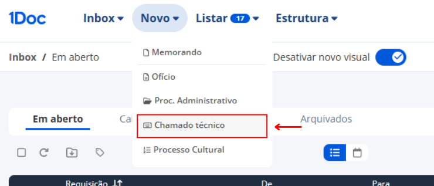
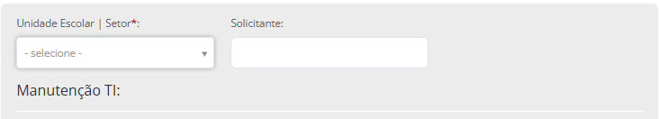
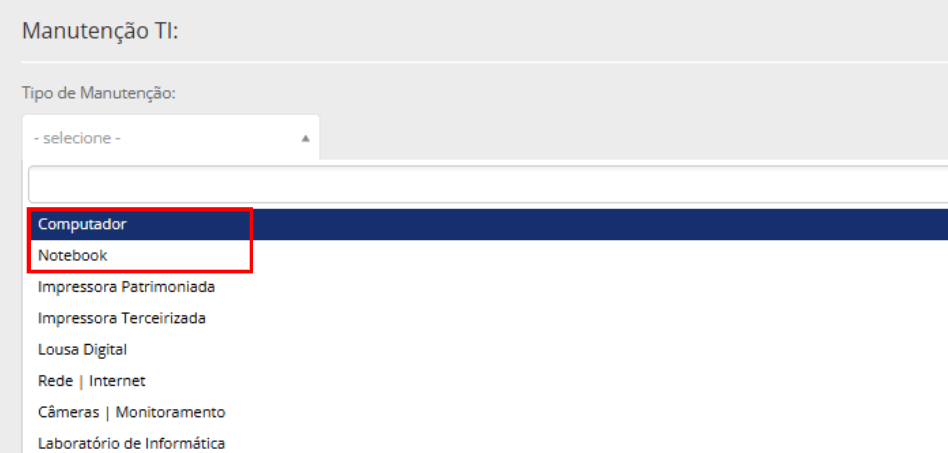
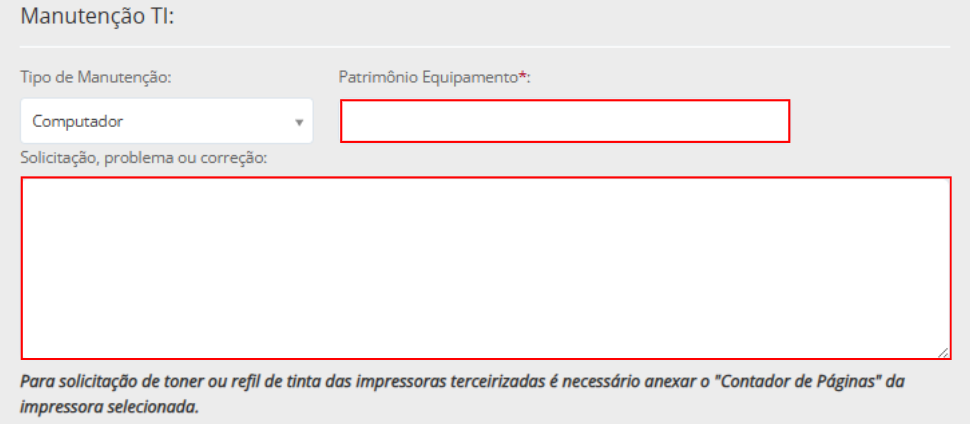
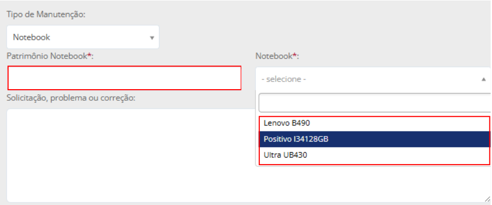
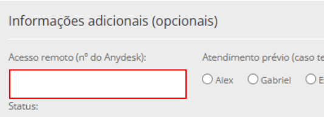

Tutorial
1Doc: Computador e Notebooks
Abertura de chamado técnico para computador ou notebook.
Campos com asterisco são obrigatórios. Descreva o defeito com clareza.
1
Criar chamado
Em Novo, escolha Chamado técnico.

2
Selecionar o assunto
Pesquise por SEEDU :: Chamado Técnico TI.

3
Preencher unidade e tipo
Informe unidade, solicitante e escolha computador ou notebook.


4
Descrever problema e acesso remoto
Informe patrimônio, modelo quando preciso e código do AnyDesk se o suporte remoto for possível.


